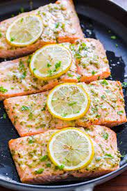

Home
Salmon

Salmon Lemon Dish
Delicious and succulent lemon salmon dish. Fresh wild-caught salmon straight from the ocean
just hours before preparing the dish, with locally grown herbs such as garlic and rosemary.
Roasted in olive oil (preferably homemade of course), and finally, topped with fresh sliced
lemon plucked from the backyard lemon tree.
Ingredients
- 10 Fresh caught wild salmon
- a few lemons
- seasonings of choice
- 2 Tbsp of olive oil
Directions
- Heat pan to medium heat and add olive oil.
- Season salmon.
- Add salmon to hot pan and cook 5 minutes on each side or until done
- Squeeze fresh lemon onto salmon and garnish with lemon slices.
- Eat salmon.